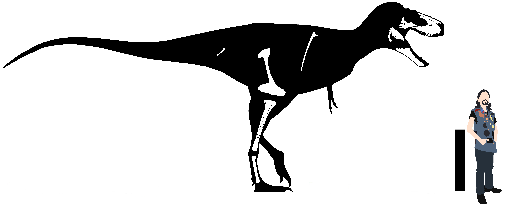

Superfamily Tyrannosauroidea Walker, 1964
Definition - enter
Diagnosis - enter
Comments - enter
Family Proceratosauridae Rauhut, Milner, & Moore-Fay, 2010
Definition - enter
Diagnosis - enter
Comments - enter
Clade Megaraptora Benson, et al. 2010
Definition - enter
Diagnosis - enter
Comments - enter
Genus Phuwiangvenator Samathi, Chanthasit, & Sander, 2019
Phuwiangvenator yaemniyomi Samathi, Chanthasit, & Sander, 2019
Early to middle Cretaceous, early to middle Gallic epoch, Barremian to Aptian stages
Sao Khua Formation, Khorat Group
Phu Wiang Site 9B, Phu Wiang Mountain, Khon Kaen Province, Thailand
SM-PW9B (Holotype)
Phu Wiang Site 9A, Phu Wiang Mountain, Khon Kaen Province, Thailand
SM-PW9A (Paratype)
Diagnosis - enter
Comments - enter
Family Megaraptoridae Novas, et al. 2013
Definition - enter
Diagnosis - enter
Comments - enter
Genus Murusraptor Insert authority here
Murusraptor barrosaensis Insert authority here
Late Cretaceous, early Senonian epoch, Coniacian stage
Sierra Barrosa Formation
Locality Data
MCF-PVPH-411 (Holotype)
Diagnosis - enter
Comments - enter
Clade Clade Insert authority here
Definition - enter
Diagnosis - enter
Comments - enter
Genus Appalachiosaurus Insert authority here
Appalachiosaurus montgomeriensis Insert authority here
Late Cretaceous, middle Senonian epoch, Campanian stage
Demopolis Chalk Formation
Alabama, United States
Specimens
Diagnosis - enter
Comments - enter
Genus Bistahieversor Carr & Williamson, 2010
Bistahieversor sealeyi Carr & Williamson, 2010
Late Cretaceous, middle Senonian epoch, Campanian stage
Hunter Wash Member, Kirtland Formation
New Mexico, United States
NMMNH P-27469 (Holotype)
Farmington Member, Kirtland Formation
New Mexico, United States
NMMNH P-25049
Kirtland Formation
New Mexico, United States
NMMNH P-32824 (Paratype) - Partial lacrimal
Upper Fruitland or Lower Kirtland Formation
New Mexico, United States
OMNH 10131 (Paratype)
Diagnosis - enter
Comments - enter
Genus Suskityrannus Nesbitt, et al. 2019
Suskityrannus hazelae Nesbitt, et al. 2019
Late Cretaceous, late Gallic epoch, Turonian stage
Lower Member, Moreno Hill Formation
MSM Locality 98-67, Zuni Basin, New Mexico, United States
MSM P4754 (Holotype)
MSM P6178 (Paratype)
Diagnosis - enter
Comments - enter
"Dryptosaurus" macropus Cope, 1868
=Lealaps macropus Cope, 1868
="Teihivenator" macropus Yun, 2017 (nomen nudum)
Late Cretaceous, middle to late Senonian epoch, Campanian to Maastrichtian stages
Navesink Formation
Monmouth County, New Jersey, United States
AMNH FARB 2550 (Syntype) - Proximal tibia (Brownstein, 2018a)
Diagnosis - enter
Comments - Yun (2017) intended to rename this taxon “Teihivenator” & included a diagnosis with a series of supposed autapomorphies & distinguishing characters from
Dryptosaurus. However, it was later noted that despite creating a Zoobank registry for this genus, Yun neglected to include it in his paper, & therefore the name is not
valid under ICZN rules (Marjanovic, online 2017). In addition, the species is likely a chimera, containing the remains of both a tyrannosaur & an ornithomimosaur (Brownstein,
2017a). In his revised assessment of the tibia (the only remains confidently referable to a tyrannosaur), he recovered “D.” macropus as a derived eutyrannosaur sister to
Bistahieversor (Brownstein, 2018a).
Family Alectrosauridae nov.
Definition - enter
Diagnosis - enter
Comments - enter
Genus Alectrosaurus Gilmore, 1933
Alectrosaurus olseni Gilmore, 1933
=Albertosaurus olseni Paul, 1988
Late Cretaceous, middle to late Senonian epoch, late Campanian to early Maastrichtian stages
Iren Dabasu Formation
AMNH Locality 136, Inner Mongolia, China
AMNH FR 6554 (Holotype)
CCDP #9, Inner Mongolia, China
IVPP #? - Partial skeleton (Dong, Currie, & Russell, 1989)
Erenhot, Inner Mongolia, China
IVPP 170788-104 - Teeth (Currie, Rigby, & Sloan, 1990)
Mongolia
IGM #? - Several partial skeletons (Currie, 2001)
Diagnosis - enter
Comments - enter
Genus Moros Zanno, et al. 2019
Moros intrepidus Zanno, et al. 2019
Middle Cretaceous, middle Gallic epoch, Cenomanian stage
Upper Mussentuchit Member, Cedar Mountain Formation
"Stormy Theropod" Locality NCPALEOUT05, Emery County, Utah, United States
NCSM 33392 - Partial femur (355mm), partial tibia (440mm), fragmentary Mt II, partial Mt IV (270mm), PP IV-3 (27.55mm), PP IV-4 (18.88mm) (Holotype)
NCSM 33393 - Tooth (Paratype)
NCSM 33276 - Tooth (Avahami, et al. 2018)
OMNH #? - Six teeth (Kirkland & Parrish, 1995)
Diagnosis - enter
Comments - enter
"Bayan Shiree alectrosaurid" Perle, 1977
Late Cretaceous, middle Senonian epoch, Campanian stage
Bayan Shiree Formation
Mongolia
IGM 100/50
IGM 100/51
Diagnosis - enter
Comments - Often referred to Alectrosaurus, though lacks autapomorphic characters of that taxon (Carr, 2005a).
Clade Clade Insert authority here
Definition - enter
Diagnosis - enter
Comments - enter
Clade Clade Insert authority here
Definition - enter
Diagnosis - enter
Comments - enter
Clade Clade Insert authority here
Definition - enter
Diagnosis - enter
Comments - enter
Genus Lythronax Loewen, et al. 2013
Lythronax argestes Loewen, et al. 2013
Late Cretaceous, late Senonian epoch, Campanian stage
Middle Member, Wahweap Formation
UMNH VP Locality 1501, Grand Staircase-Escalante National Monument, Kane County, Utah, United States
UMNH VP 20200 (Holotype) (Total length 7.42m) - Partial skull, dorsal rib, chevron, pubis, left tibia, left fibula, Mt IV
Diagnosis - enter
Comments - enter

Skeletal reconstruction of Lythronax argestes. Scale bar equals 2m.
Clade Daspletosaurini Voris, et al. 2020
Definition - enter
Diagnosis - enter
Comments - enter
Genus Daspletosaurus Russell, 1970
=Thanatotheristes Voris, et al. 2020
Daspletosaurus torosus Russell, 1970
=Tyrannosaurus torosus Paul, 1987
=Daspletosaurus wilsoni Warshaw & Fowler, 2022
Age
Formation
Locality Data
CMN 8506 (Holotype)
Jack's B2 Site
BDM 107 (Daspletosaurus wilsoni holotype)
Diagnosis - enter
Comments - Warshaw & Fowler (2022) named Daspletosaurus wilsoni for a partial
Daspletosaurus horneri Carr, et al. 2017
Late Cretaceous, middle Senonian epoch, late Campanian stage
Upper Member, Two Medicine Formation
Locality Data
MOR 590 (Holotype) - Partial skull (894mm), humerus, femur (875mm), tibia (820mm), fibula (710mm), astragalus, calcaneum, DT III, DT IV, Mt II (461.8mm), PP II-1 (141.5mm), PP
II-2 (99.5mm), PUP II, Mt III (510.8mm), PP III-1 (129.4mm), PP III-2 (92.3mm), PP III-3 (74.9mm), PUP III, Mt IV (475.1mm), PP IV-1 (98.5mm), PP IV-2 (79.1mm), PP IV-3 (59.2mm),
PP IV-4, PUP IV
MOR 553S.7.19.0.97 (Paratype) - Skull (496mm*)
MOR 1130 (Paratype) - Partial skull, Cv4 (57.4mm), Cv7, Cv8 (92.7mm), three dorsals, 13 caudals (140.6, 142.1, 150, 142.1, 145.9, 124.6, 74.4, 45.2mm), partial pelvis, femur, tibia
(920mm), fibula, calcaneum, DT III, DT IV, Mt II (480mm), PP III-2 (112.7mm), PP III-3 (85.2mm), Mt IV (530.3mm), PP IV-2 (57.4mm)
AMNH FR 5477 - Paxilla (480mm), partial postorbital, parietal
MOR 553D.9.19.91 - Ectopterygoid
MOR 553E.7.6.91.196 - Ectopterygoid
MOR 573 - Frontal (71mm)
MOR 3068 - Partial mandible
Diagnosis - enter
Comments - enter
Daspletosaurus degrootorum Voris, et al. 2020
=Thanatotheristes degrootorum Voris, et al. 2020
Late Cretaceous, middle Senonian epoch, middle Campanian stage
Foremost Formation, Judith River Group
Locality Data
RTMP 2010.5.7 (Holotype) - Partial skull
RTMP 2018.16.1 (Paratype) - Fragmentary maxilla
Diagnosis - Single row of evenly spaced dorsoventrally oriented ridges on subcutaneous surface of maxilla ventral & anteroventral to antorbital fossa (1); transversely
rounded & inflated orbital margin of jugal (2); prefrontal with two posteriorly projecting prongs articulting with frontal on ventral surface of skull roof (3) (modified from
Voris, et al. 2020)
Comments - enter
Clade Tyrannosaurini Olshevsky, 1995
Definition - The most inclusive clade containing Tyrannosaurus rex but not Albertosaurus sarcophagus, Alioramus remotus, or Daspletosaurus torosus (from
Warshaw, Barrera Guevara, & Fowler, 2024)
Diagnosis - enter
Comments - enter